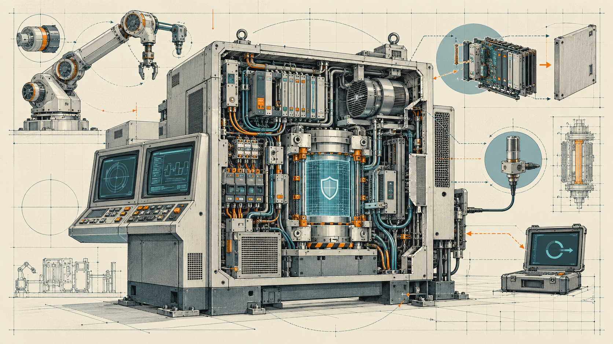

The EU Machinery Regulation 2023/1230: From Machine Safety to Cyber-Physical Safety
How software, connectivity, cybersecurity, AI, remote access, and digital modification are changing machinery safety
Released on 13 October 2026, MITRE ATT&CK v20 expands its empirical classification of adversary behavior across Enterprise, industrial control systems, and Mobile. New Enterprise techniques address prompt injection, AI-mediated exfiltration, AI result poisoning, interference with autonomous defenses, application-specific passwords, and automation evasion. Industrial additions distinguish execution through particular interpreters and command-and-control through DNS and publish/subscribe protocols; new campaign records describe attacks against U.S. water utilities and an AI-assisted intrusion into Mexican government infrastructure.
This article examines those changes as developments in an evolving behavioral knowledge model, not as evidence that each technique is newly invented or becoming more prevalent. It reconstructs the technical mechanisms and original investigations behind the release, distinguishes verified effects from attempted intrusions, and analyzes Detection Strategies, Analytics, Data Components, and asset-aware observability. It argues that ATT&CK’s value increases when its classifications are converted into architecture-specific, falsifiable security hypotheses backed by explicit authorization boundaries, feasible telemetry, and reproducible validation.
MITRE released ATT&CK v20 on 13 October 2026, extending its behavioral knowledge base across enterprise computing, mobile devices, and industrial control systems. The release contains new classifications for prompt injection, AI-enabled exfiltration, attacks on autonomous defenses, abuse of application-specific passwords, and anti-automation evasion. It also describes two critical-infrastructure campaigns, adds industrial interpreter and communication-protocol sub-techniques, revises prominent espionage and financial-crime Group profiles, and expands the documentation available to detection engineers.12
A superficial reading would treat this as an inventory of new cyber threats. That interpretation is inadequate. Some behaviors entering v20 have been documented for years: embedded-device malware used MQTT in 2024, command interpreters featured in attacks on electricity infrastructure long before 2026, and mobile malicious-app sideloading predates the restored Mobile technique by more than a decade. Other additions concern genuinely emerging application architectures, particularly agents able to retrieve untrusted content and invoke privileged tools. Still others enlarge MITRE’s evidence and detection records without introducing new adversarial behavior.
The release is therefore interesting for what it reveals about how cyberattacks are represented. Cybersecurity increasingly confronts systems in which a legitimate component can become an intermediary for unauthorized activity. An engineering workstation can issue commands to a controller; a telemetry gateway can communicate with external messaging infrastructure; an AI agent can invoke an enterprise API; a development pipeline can install a dependency and publish signed artifacts. The attacker often needs to redirect an authorized relationship rather than invent an entirely new primitive.
This article examines ATT&CK v20 through three connected questions. What changed in the formal representation of tactics, techniques, actors, software, and detections? Which documented operations and technical developments justify those changes? And what can defenders reasonably infer—and not infer—from the resulting mappings? The analysis uses the official v19.2-to-v20 records and primary incident investigations, retaining a critical distinction between an attempted attack, a demonstrated compromise, a realized operational effect, and an independently validated defensive capability.
The central argument is that v20 is most valuable when used to develop testable, architecture-specific hypotheses about adversarial authority and observable behavior, rather than as an expanding checklist of techniques to mark as covered. This interpretation is particularly important at enterprise-to-OT boundaries and wherever AI-enabled applications mediate access to data or tools.
ATT&CK originated in MITRE’s research into adversary behavior against enterprise systems. Its first public Enterprise matrix appeared in 2015 after experimental work beginning in 2013. The framework is now a globally accessible knowledge base built from real-world observations, not a universal enumeration of everything an attacker might theoretically do.34
The conceptual distinction between tactic, technique, sub-technique, and procedure is fundamental. A tactic describes an adversary’s objective—such as Credential Access, Execution, or Exfiltration. A technique identifies a method by which the objective can be pursued. A sub-technique describes a more specific implementation category. A procedure is an observed or documented instance: the commands, scripts, protocol interactions, and operational choices used in a particular campaign. These levels must not be conflated. A newly published procedure may fit an existing technique, while a newly introduced technique may describe behavior already present in old incidents.
Nor is ATT&CK an ordered kill chain. Tactics describe objectives, not mandatory chronological phases. An adversary can revisit discovery and credential collection repeatedly, pursue several objectives in parallel, or move among them in a different order from the matrix’s display.5
The object model summarized in Table 1 extends well beyond technique definitions. Its objects include Groups—tracked activity clusters whose names and membership depend on investigative evidence—Campaigns, Software, Mitigations, industrial Assets, Data Components, Detection Strategies, and Analytics. These form a versioned relationship graph, published through STIX and supporting tools. A Group-to-Technique association records reported behavior; a Software-to-Technique relationship captures a documented capability or use; a Detection Strategy describes an approach to recognizing a technique rather than asserting that any deployed security product implements it.6
| Object | Principal question | Essential limitation |
|---|---|---|
| Tactic | What adversarial objective is pursued? | Not a mandatory attack phase |
| Technique/sub-technique | How can that objective be pursued? | Not a specific executable procedure |
| Campaign | Which activities are documented together? | Not necessarily a complete timeline |
| Group | Which observations are attributed to a tracked cluster? | Not a unique actor identity or forensic proof |
| Software | Which tools or malware have been documented? | Not evidence of use at every victim |
| Detection Strategy | What behavioral evidence might identify a technique? | Not a production detection rule |
| Analytic | What platform-specific logic and evidence are proposed? | Not a measured false-positive rate or guaranteed data source |
| Data Component | What class of observation is relevant? | Not proof that telemetry is collected |
| ICS Asset | What functional role does a system play? | Not a complete plant-specific authority model |
The three domains—Enterprise, Mobile, and ICS—organize behaviors according to technological scope. Membership in more than one domain does not imply multiple distinct incidents, and platform labels do not establish what an asset may legitimately do. A Windows historian and a Windows engineering workstation run similar software but possess different authorized roles; a Linux gateway may expose ordinary shell capabilities while also having connections to industrial systems. Such differences explain the importance of asset-aware detection.
The structured detection model introduced in ATT&CK v18 made that distinction more explicit by separating the Detection Strategy (DET identifier), the Analytic (AN identifier), and the Data Component (DC identifier). DET0455, for example, describes PowerShell abuse as a detection problem without equating the mere launch of an interpreter with malicious activity. In v20 the model increasingly records the system role and collection assumptions against which such execution should be assessed.78
ATT&CK is consequently a curated representation of observed behavior. It supports reproducible classification and comparison, but its entries inherit the evidentiary limitations of the underlying sources. It does not establish prevalence, unique attribution, operational causality, or deployed detection effectiveness solely by assigning identifiers.
ATT&CK v19.2, published on 6 August 2026, was the first narrower Agile release, concentrating on selected Groups, Software, and Campaigns between major publication cycles. The 13 October v20 release changes the technique taxonomy itself and adds substantial detection material alongside new intelligence records.910
As Table 2 shows, v20 contains extensive domain-specific inventories; the additions themselves comprise nine Enterprise technique/sub-technique objects and nine ICS technique/sub-technique objects. Mobile restores and revises an existing technique, rather than introducing a new technique family. The corresponding domains contain the following v20 totals, which are inventory sizes—not counts of additions.
| Category | Enterprise | Mobile | ICS |
|---|---|---|---|
| Tactics | 15 | 12 | 12 |
| Techniques | 227 | 78 | 78 |
| Sub-techniques | 479 | 47 | 26 |
| Groups | 178 | 20 | 14 |
| Software | 842 | 128 | 25 |
| Campaigns | 57 | 3 | 10 |
| Detection Strategies | 703 | 124 | 106 |
| Analytics | 1,770 | 211 | 302 |
| Data Components | 106 | 29 | 36 |
| ICS Assets | — | — | 18 |
MITRE reports 971 distinct Software objects, 182 Groups, and 61 Campaigns across the full release, whereas summing domain membership counts produces larger numbers. That is expected because the same object can appear in more than one domain.11
The nine items listed in Table 3 occupy different stages of an adversarial operation; their mechanisms should not be conflated.
| ID | Official technique or sub-technique | Security boundary implicated |
|---|---|---|
| T1696 | Anti-Automation Evasion | Abuse of bot and human-verification controls |
| T1696.001 | Automate CAPTCHA Completion | Automated or outsourced solving of a challenge |
| T1696.002 | Avoid CAPTCHA | Bypassing challenge presentation |
| T1697 | Steal Application Specific Passwords | Alternate authentication path outside interactive MFA |
| T1698 | Indirect Prompt Injection | Untrusted retrieved content treated as instructions |
| T1699 | Direct Prompt Injection | Adversarial instructions submitted through an AI interface |
| T1700 | AI-Enabled Exfiltration | Agent tools used for unauthorized information transfer |
| T1608.007 | Stage Capabilities: AI Result Poisoning | Manipulation of material encountered by AI search and retrieval |
| T1685.007 | Disable or Modify Tools: Impair Autonomous Defenses | Malicious interference with automated defensive analysis |
The revision of T1195.001, Compromise Software Dependencies and Development Tools, from version 1.3 to 2.0 is also significant: its expanded description encompasses IDE configurations, coding-agent instructions, and associated development artifacts. These may contain executable code, but they can also contain natural-language instructions that become operational when interpreted by an agent with tool privileges.12
The new ICS Command and Scripting Interpreter (T1701) technique contains six sub-techniques: PowerShell (T1701.001), Windows Command Shell (.002), Unix Shell (.003), Visual Basic (.004), Python (.005), and JavaScript (.006). The previous ICS Command-Line Interface (T0807) and Scripting (T0853) techniques are deprecated. The two other new ICS sub-techniques fall under Standard Application Layer Protocol (T0869): DNS (.001) and Publish/Subscribe Protocols (.002). A new ICS Mitigation, Limit Software/Package Installation (M1061), addresses one aspect of the execution environment.1314
Mobile restores Deliver Malicious Application via Other Means (T1476), deprecated after v11, and revises the mappings of 28 Software objects. NGate enters the Mobile Software collection, while StrongPity gains Mobile coverage. In threat intelligence, v20 introduces the distinct Campaign objects C0064 and C0066, the Groups NIMBUS MANTICORE and The Gentlemen, and substantive updates to Salt Typhoon and APT38.15
A second numerical issue requires care. MITRE’s accompanying article highlights 15 new Detection Strategies and 38 Analytics. The detailed release inventory lists many additional new Analytic objects. An exhaustive count of its New Analytics sections yields 12 Enterprise and 205 ICS entries, or 217. The 38-Analytic headline is not directly reconciled by the published counting explanation, and these figures should not be treated as interchangeable. The distinction is developed in the detection-engineering section.1617
The overarching change is therefore threefold: MITRE is documenting behavior associated with AI-mediated systems; it is describing industrial execution and communication methods with finer granularity; and it is increasing the contextual specificity of defensive observations. None of those developments can be measured adequately by counting technique objects alone.
The two new campaigns illustrate different ways cyber activity can approach industrial consequences. The July 2026 U.S. water utility attacks involved direct access to internet-exposed controllers and documented operational interference. The AI-assisted Mexican government campaign began with enterprise compromise and progressed toward an industrial management interface, but investigators did not establish access to the underlying control systems. Treating both as successful OT takeovers would erase the distinction between exposure, attempted movement, and achieved control.1819
On 27 July 2026, activity affected more than thirty community water and wastewater systems in Minnesota, while the FBI and EPA described a wider pattern across at least seven U.S. states. The attackers targeted Rockwell Automation/Allen-Bradley MicroLogix 1100 and 1400 PLCs reachable through internet-facing cellular communications at facilities including water towers and lift stations. Reported actions included changing controller IP addresses and passwords, depriving operators of normal monitoring and control. At least one victim identified discrepancies in PLC ladder logic; across the reported incidents, consequences included loss of pressure, flooding, and interruptions requiring manual operations.2021
These observations should be interpreted at different levels. An altered controller address can interrupt supervisory communication without necessarily stopping local control logic. A changed password can prevent engineering access even while the device operates. A modified control program may affect process behavior directly, but the causal relationship must be reconstructed for the particular equipment. ATT&CK accordingly distinguishes Change Credential (T0892), Modify Parameter (T0836), Modify Program (T0889), Denial of Control (T0813), Loss of Control (T0827), Loss of View (T0829), and Loss of Availability (T0826); the presence of all these mappings in one campaign does not establish that each occurred at every victim.
The significance of the attack’s effects also depends on the semantics of industrial control. Denial of Control describes activity that prevents operators from directing equipment; Loss of Control describes a resulting inability to exercise intended control; Loss of View concerns observability. An installation may lose communications with its supervisory system while local PLC logic continues functioning. Whether service is interrupted depends on the process, fail-safe states, autonomy of local controllers, and independent protection systems. An analyst therefore cannot infer physical disruption merely from an inaccessible IP address, although an inaccessible controller remains an important incident requiring investigation.
The reported access path is itself significant. Default credentials and internet-accessible devices (T1694.001 and T0883) appear in the campaign’s mappings. There is no public proof that the incidents required exploitation of a newly discovered PLC vulnerability. Forescout’s August 2026 research identified thousands of internet-visible Rockwell controllers, many associated with U.S. mobile networks, but the discovery dataset was not a census of compromised devices. Visibility of a service such as EtherNet/IP over TCP/44818 also does not, by itself, prove that the endpoint accepts privileged changes: model, configuration, authentication, and operational state matter.22
The campaign remains formally unattributed. Similarities to Iranian-affiliated PLC operations, separately documented by U.S. agencies earlier in 2026, are relevant to investigation but not decisive evidence of shared authorship. Equating a behavior pattern with a unique Group would undermine the analytical purpose of ATT&CK’s technique abstraction.23
The resulting architectural question is concrete: which communications path allowed an untrusted actor to obtain authority to modify the controller? A private carrier network, cellular modem, or VPN does not automatically provide authorization; it must be coupled to explicit identities, permitted sessions, restricted protocol operations, and separation of management from ordinary telemetry. The relevant failure is the availability of consequential control functions through an insufficiently protected path.
Between December 2025 and February 2026, an adversary compromised Mexican government institutions and extracted sensitive administrative and civilian records. Recovered operational artifacts showed use of commercial AI systems, including Claude Code, for reconnaissance, script development, vulnerability exploitation, credential collection, and exfiltration. The municipal water utility SADM in Monterrey was among the affected organizations.2425
The reconstructed activity at SADM followed a different path from C0066. After obtaining access to the enterprise environment, the attacker used internal reconnaissance and proxy connections to discover vNode, an industrial gateway and supervisory integration platform. The attacker then generated candidate passwords and conducted two unsuccessful rounds of password spraying against its web interface. Dragos’ specialist investigation found no validated access to the underlying industrial control environment and no evidence of controller manipulation. The attacker returned to enterprise data exfiltration after the failed attempts.26
This finding is central. C0064 is listed in both the Enterprise and ICS release inventories because it involves an industrially relevant target, yet MITRE’s published Techniques Used table contains Enterprise mappings. Neither that domain membership nor the discovery of an OT-adjacent management interface establishes successful OT compromise. The campaign demonstrates that AI can help a conventional intruder identify industrial assets and prepare an attempted crossing of an IT/OT boundary, not that an agent autonomously acquired control of a water treatment process.
The investigated intrusion also demonstrates why an external AI service should not be credited with an independently verified ability to navigate OT. Discovery of vNode followed compromise of the utility’s broader enterprise network and the use of existing credentials and network relationships; the adversary then attempted authentication rather than controlling industrial endpoints. This is a meaningful example of general-purpose reconnaissance reaching an industrially sensitive boundary, but the attempted move does not establish the availability of a valid route or credentials into the control systems.
The adversary’s approximately 17,000-line, 49-module Python toolkit, BACKUPOSINT v9.0 APEX PREDATOR, assembled capabilities familiar from conventional penetration testing and post-compromise operations. Its breadth is evidence of extensive tooling, while its creation with AI assistance suggests a possible reduction in assembly effort; it does not measure the toolkit’s reliability or prove a novel industrial exploit. The case should not be turned into a claim that code generation is equivalent to operational control authority.
Figure Figure 1 distinguishes the two causal paths.
flowchart TB
subgraph US["C0066: U.S. water utilities"]
direction TB
U1[External adversary] -->|cellular or public exposure| U2[Industrial PLC]
U2 -->|unauthorized configuration| U3(Changed password, IP or logic)
U3 -->|documented effects| U4[Loss of view, control or availability]
end
subgraph MX["C0064: Mexican government infrastructure"]
direction TB
M1[Adversary] -->|compromise| M2[Enterprise IT]
M2 -->|internal discovery| M3[OT-adjacent vNode interface]
M3 -->|password spraying| M4{Authentication succeeds?}
M4 -->|no, observed attempts| M5[No validated OT access]
M3 -.->|possible integration dependency| M6[Industrial control systems]
end
The two cases show why the phrase IT/OT convergence is insufficiently specific. The decisive variables are the rights available to the compromised principal, the functions exposed by intermediate applications, and the trust boundary mediating commands to industrial equipment. A service may have legitimate access to measurements without any right to modify a controller; conversely, an engineering interface can be dangerous even when reachable through a small set of apparently trusted systems.
The industrial additions in v20 respond to the heterogeneity of operational environments. PLCs and RTUs coexist with Windows HMIs, engineering servers, Unix-based gateways, network appliances, virtualization hosts, and cloud integrations. An adversary’s ability to execute a command on one of these systems does not automatically imply control of the industrial process; nevertheless, the process and network authority attached to the compromised system can make ordinary execution mechanisms operationally consequential.
Command and Scripting Interpreter (T1701) replaces the older, less-specific ICS categories Command-Line Interface and Scripting. Its six sub-techniques, compared in Table 4, distinguish interpreters whose execution artifacts and operating contexts differ.
| ICS sub-technique | Execution environment | Representative evidence |
|---|---|---|
| T1701.001 PowerShell | Windows engineering and supervisory hosts | Process creation, script blocks, parent process, session identity |
| T1701.002 Windows Command Shell | Windows administrative systems | Command line, batch execution, native utility invocation |
| T1701.003 Unix Shell | Linux gateways, RTUs and servers | SSH/session events, shell history where available, process execution |
| T1701.004 Visual Basic | Windows applications and scripting hosts | Script host activity, application automation, file and process events |
| T1701.005 Python | Engineering tools and application services | Interpreter or packaged-runtime execution, libraries, network operations |
| T1701.006 JavaScript | Browser, Windows and application runtimes | Runtime, script and application-specific events |
These categories capture historically documented behavior. PowerShell and Visual Basic featured in attacks on Ukrainian electricity operations; during the 2022 Ukrainian attack, a malicious script invoked legitimate ABB MicroSCADA functionality. The Triton framework used Python components to communicate with Triconex safety controllers through a specialized protocol. In the 2025 Polish energy incidents, adversaries used remote access and shell commands against Linux-based RTUs and Windows systems. The Polish investigation reported disruption of remote communications and control without establishing corresponding interruptions of generation at every affected site.2728
Industrial examples also illustrate different evidentiary layers. During attacks in Ukraine, scripts executed through Windows applications that already possessed SCADA-related functionality; Triton’s Python components implemented communications with specialized safety controllers. In Poland, investigators reported privileged shell use and destructive changes to RTU systems, while carefully distinguishing loss of remote communications from verified interruption of all generating assets. In every case, the engineering question is not the interpreter name alone, but which control APIs, protocol operations, and privileges the executable could use.
The security significance lies in the relation between execution context and industrial authority. A Python script may query telemetry without changing state, or it may invoke a library that writes controller parameters. A packaged Python runtime may execute without producing a separate python.exe process. Therefore, detection keyed solely to executable names is incomplete, while rules identifying every invocation as hostile ignore routine engineering practices.
The new Standard Application Layer Protocol sub-techniques—DNS (T0869.001) and Publish/Subscribe Protocols (T0869.002)—distinguish communication behaviors that can be hidden among legitimate industrial traffic.2930
DNS can carry encoded signals or data in queries and records, while encrypted DNS may simply resolve the address of a different C2 channel. These are not the same mechanism. A passive sensor might observe an unauthorized DoH connection without seeing the DNS queries themselves; a rule based on long domain names alone risks confusing tunneling with legitimate service discovery or device-registration patterns.
Publish/subscribe systems create a different topology. In MQTT, a client can establish an outbound session with a broker, subscribe to commands, and publish responses without the controller being directly addressable from outside. MQTT over TLS may conceal topic and payload contents from passive monitoring. Effective controls depend on broker identity, authenticated clients, permitted topics, message direction, and application semantics, not merely on whether traffic uses TCP/1883 or TCP/8883.
Claroty Team82’s December 2024 investigation of IOControl (S9046) found an implant targeting embedded Linux devices, including fuel-management equipment. The analyzed malware used encrypted configuration, modified packing, persistence through an RC startup script, DNS-over-HTTPS resolution, and an MQTT broker for commands and responses. Its supported functionality included arbitrary shell command execution, port scanning, device information collection, and removal of local artifacts.3132
As the architecture in Figure 2 makes clear, the ATT&CK mappings are complementary rather than redundant: T1701.003 represents Unix-shell execution, T0869.001 represents DNS-related infrastructure discovery or communications, and T0869.002 represents broker-mediated C2. A single malware family can involve all three without their representing a single inseparable technique.
flowchart LR
subgraph DEVICE["Compromised embedded asset"]
IM[IOControl implant] -->|invokes commands| SH(Unix shell execution)
SH -->|results| IM
end
IM -->|DoH resolution| DNS[External DNS resolver]
DNS -->|broker address| IM
IM <-->|MQTT session| BR[MQTT broker]
ADV[Adversary operator] -->|publish commands| BR
Importantly, IOControl was investigated in 2024; its appearance in v20 is a change to the knowledge base, not the malware’s invention date. And the ability to execute shell commands does not prove that every infected platform exposed equal authority over its process-control functions.
BACKUPOSINT (S9045) illustrates the opposite end of the spectrum. Its broad Python modules support enterprise reconnaissance, credential collection, movement, and data extraction, while the associated Mexican campaign reached an attempted attack against an industrially relevant web interface. The published evidence does not support treating BACKUPOSINT as a specialized PLC takeover framework. The distinction between cross-domain use and industrial capability is essential.
From a defensive standpoint, the new ICS Mitigation M1061, Limit Software/Package Installation, can restrict the introduction of executable material, but cannot prevent misuse of interpreters already installed or embedded in legitimate applications. Stronger designs combine controlled maintenance access, application policy, protocol-aware authorization, outbound restrictions, and contextual monitoring. For industrial systems, the authorized operations and traffic profile must be specified before a detector can reliably classify deviations.
AI appears in ATT&CK v20 in several distinct relationships to the adversary. A model may be an external resource used to prepare attacks; it may be the target of malicious instructions; an agent may become an intermediary for privileged data access or exfiltration; or AI-assisted defenses may themselves be attacked through the untrusted material they examine. Treating these as one category called AI attacks obscures their different control requirements.
ATT&CK had already classified adversarial acquisition of AI capabilities under T1588.007, Obtain Capabilities: Artificial Intelligence. The v20 additions Direct Prompt Injection (T1699), Indirect Prompt Injection (T1698), AI-Enabled Exfiltration (T1700), AI Result Poisoning (T1608.007), and Impair Autonomous Defenses (T1685.007) address distinct actions within and against AI-enabled applications.33343536
Commercial AI can reduce the manual work involved in preparing phishing messages, writing scripts, analyzing network descriptions, organizing credentials, and iterating tools. Google Threat Intelligence Group documented agent-supported intrusion workflows in 2026, and Anthropic reported an AI-orchestrated espionage operation in 2025. The Mexican government campaign offers a particularly detailed example of an adversary using AI to assemble conventional offensive capabilities and interpret heterogeneous enterprise information.373839
The available evidence supports participation in offensive operations, not a general conclusion that agents can autonomously compromise arbitrary organizations. Comparisons of speed or productivity require a controlled baseline with equivalent targets and conditions. A large AI-generated toolkit may contain more modules without proportionately increasing reliability or access rights. The attacker must still overcome the target’s authentication, software, and network constraints.
Direct prompt injection occurs through the interface to which the adversary submits instructions. Indirect prompt injection occurs when instructions are planted in lower-trust material—webpages, documents, emails, repository files, tool responses—which an AI system subsequently encounters during an authorized task. Both attempt to redirect the model, but only the second depends on promoting instructions embedded in task data into effective authority.
This is a familiar trust-boundary problem expressed through a new interpretive medium. A ticket-summarization assistant should process the contents of a customer ticket but not obey a ticket author’s instruction to export unrelated customer records. A research agent may summarize a webpage without accepting its instruction to reveal confidential prompts. A coding agent may inspect a repository file without allowing that file to grant itself release permissions.
A useful distinction separates the adversary’s influence over the model from authority granted by the surrounding application. A model could comply with a malicious text instruction and still fail to cause a security incident because no relevant tool is available. Conversely, a technically correct tool call could violate policy if the model chooses an unauthorized recipient on the basis of an adversary-controlled webpage. Security evaluation must trace the proposed action, the identity under which it is requested, the resource it targets, and the enforcement decision made by the application or downstream service.
The relevant security property can be stated formally. Let u be the authenticated principal, a a proposed operation, r the affected resource, and c untrusted content lacking delegated authority. For an independent, trusted authorization mechanism, the required invariant is
The invariant in Equation 1 concerns authority, not the factual inputs the application may legitimately use to choose among already authorized actions. Untrusted content may determine which page is summarized or what question is answered; it must not independently confer permission to read a protected repository or send its contents externally.
The architecture in Figure 3 separates the model’s proposed action from the system’s authorization decision. The distinction becomes crucial where the agent has tools capable of email delivery, database access, code execution, or publishing software.
Research by Unit 42 and Google found malicious prompts placed on public webpages, including attempts to redirect search systems, evade review, and induce disclosure. These investigations establish attacker preparation and real-world deployment of payloads; they do not establish that every target AI consumed the material or complied with it. Google reported changes within its Common Crawl-based sample, but that sample is not a representative measurement of successful prompt-injection intrusions.4041
The February 2026 Cline incident supplies a more operational example: a public issue title could influence an AI triage workflow equipped with tools including shell execution, creating a path toward package installation and build-environment abuse. A subsequent unauthorized npm release involved a publication token that was not adequately revoked. The demonstrated injection vulnerability and the actual publication compromise must be distinguished; they illustrate connected but not identical failures of agent authority and credential lifecycle controls.42
T1700 concerns use of AI-enabled tools to move information outside an authorized boundary. It is not simply the act of an agent reading or summarizing data, nor does it require a novel transport: the subsequent transfer can use an ordinary web API, email integration, or code repository. The attacker’s influence over the model is an entry mechanism; resource access and outbound transfer are separate operations requiring their own authorization and evidence.
DET0927 accordingly emphasizes correlations between protected-data access, agent tool invocations, external destinations, and evidence of successful transfer. The important observation is the unauthorized consequence, not merely the presence of suspicious wording in a prompt.43
AI Result Poisoning (T1608.007) is different. An adversary may publish webpages or apparent references designed to influence AI search results and synthesized recommendations. This may be achieved through false claims without any explicit instruction to the model, so result poisoning is not necessarily prompt injection. It also need not involve modifying training data: retrieval-time staging can influence outputs without modifying model parameters.
MITRE’s DET0922 openly acknowledges the observation limit: enterprise target-side telemetry cannot reliably determine whether public content was adversarially staged rather than ordinarily published, inaccurate, or optimized for discoverability. The absence of a trustworthy behavioral detector is itself a valuable finding. Mitigations must consider source provenance, corroboration, and controls on whether AI-derived recommendations may trigger consequential actions.44
T1685.007 describes adversaries embedding instructions in evidence consumed by autonomous or AI-assisted security analysis. The malicious document, malware sample, or repository comment attempts to make the defender’s agent terminate early, misclassify the artifact, suppress alerts, or ignore required investigative steps.
SentinelLABS identified such a payload in the macOS.Gaslight implant in 2026: fabricated system messages attempted to interfere with LLM-assisted malware triage. Google separately documented malicious comments or files designed to manipulate coding assistants and automated scanners. These are verified examples of attacker-prepared instructions, not universal proof of successful suppression of production security tools.4546
A robust security-analysis workflow must therefore preserve provenance, separate extracted evidence from operational instructions, and record tool invocations and completion states independently of the model’s own narrative. More generally, the challenge introduced by AI-enabled software is not that language models use language; it is that systems may give their interpretations of lower-trust language access to privileged actions without an external policy boundary.
The remaining Enterprise additions concern established controls whose protective effect can be circumvented through an alternative path. Application-specific passwords can authenticate without the usual interactive MFA challenge; CAPTCHA challenges can be solved or avoided without establishing legitimate human identity; and trusted developer workflows can run attacker-controlled code or instructions without compromising the final application directly. Each exposes a difference between the existence of a security mechanism and enforcement of the property it is supposed to protect.
An application-specific password (ASP) is a reusable credential issued for an application or device that cannot complete the identity provider’s modern interactive authentication. Its legitimate role is compatibility with older mail clients or devices, but subsequent authentication using that secret can bypass the standard MFA challenge. Steal Application Specific Passwords (T1697) classifies the acquisition of these credentials through social engineering, account access, or theft from an endpoint.47
In 2025 Google and Citizen Lab documented campaigns targeting academics, journalists, and critics of Russia. The attackers impersonated legitimate contacts, including U.S. government personnel, and persuaded recipients to generate Google application passwords through genuine account-management interfaces. The adversary sought the resulting secret to obtain mailbox access without the ordinary second-factor prompt. This differs from a counterfeit-login phishing page: the browser may be on the genuine provider site, yet the requested credential-generation workflow is adversarial.4849
The associated engineering requirement concerns the set of accepted authentication methods. MFA configured for interactive sessions is insufficient if alternate credentials provide the same access at weaker assurance. Disabling the issuance of new ASPs may not revoke already issued ones; Microsoft explicitly distinguishes those administrative operations. DET0926 consequently uses account-management and sign-in telemetry to correlate creation and subsequent use, but its efficacy depends on provider logging, approved exceptions, client identity, and known network sources.5051
Anti-Automation Evasion (T1696) distinguishes completing a presented CAPTCHA automatically (T1696.001) from avoiding presentation of the challenge (T1696.002). Neither mechanism proves that a client is human. An attacker may use image processing, model-based recognition, paid human solving, browser emulation, proxy reputation, or a combination of these capabilities.52
Unit 42’s PurpleUrchin investigation documented large-scale automated account creation and abuse of cloud free-tier resources, including elementary CAPTCHA bypass techniques predating current generative AI. SentinelLABS’ AkiraBot investigation described AI-generated spam coupled with Selenium browser automation, fingerprint manipulation, and third-party CAPTCHA solvers. These examples show that the use of AI to produce variable content and the mechanism that evades anti-bot controls are analytically distinct.5354
ATT&CK’s DET0937–DET0939 explicitly acknowledge that CAPTCHA completion telemetry cannot reliably determine whether the solver was human, automated, AI-assisted, or outsourced. Defending the service therefore requires transaction-level authorization, rate and resource controls, account abuse detection, and context-sensitive session evaluation, not merely acceptance of a successful challenge token.55
The revision of T1195.001 extends supply-chain compromise beyond executable libraries and packages to IDE configuration, agent skills, Markdown instructions, and other files that cause tools to act. The mechanism is not always direct code execution: a repository document can influence a coding agent to invoke a shell, install software, read secrets, or modify a release pipeline using privileges the document’s author does not possess.
The 2026 Cline incident demonstrated how a public issue field could redirect an AI issue-triage workflow whose permissions included command execution. Zenity’s August 2026 research documented malicious agent skills, look-alike repositories, mutable installation guides, and dependency chains intended to harvest development and cloud credentials. Public installation counters for the affected skills described aggregate events, not independently confirmed unique compromised users.5657
Google’s DUSTMAKER investigation similarly documented malicious configuration and repository content targeting coding assistants, developer environments, and continuous integration systems. Separate supply-chain investigations into Axios and Mastra showed how poisoned npm dependencies could execute malicious installation scripts in ordinary build environments. A package’s install-time lifecycle code may execute before the consuming application imports it; therefore, application-level dependency review does not exhaust build-time risk.585960
These attacks can also exploit the distinction between cryptographic provenance and workflow integrity. A valid release attestation may correctly identify the publishing workflow while failing to show that an attacker influenced the workflow or controlled its credentials. Compromise of an authenticated publishing identity can produce genuinely signed malicious artifacts.
The recurring control-path distinction is set out in Table 5.
| Mechanism | Inadequate security conclusion | Property requiring independent enforcement |
|---|---|---|
| MFA | “A second factor protects interactive login.” | Every accepted authentication path meets required assurance |
| CAPTCHA | “The challenge was completed.” | The subsequent action is legitimate and authorized |
| Repository or skill reputation | “The file was previously reviewed.” | The exact content consumed and invoked remains trusted |
| Signed build | “The artifact has valid provenance.” | The build inputs and publishing authority were uncompromised |
| Coding agent | “A trusted tool issued the command.” | The command is independently authorized for that principal and resource |
For engineering practice, these cases require restrictions at the points where authority is exercised: lifecycle management of alternate credentials, abuse-resistant application operations, controlled package installation, isolated CI jobs, restricted agent tools, and independently authorized release operations. Detection can identify deviations only where the organization retains the relevant identity, source, dependency, and execution evidence.
ATT&CK’s new Group and Software objects connect technical behaviors to reported operations, but Group names should be treated as analytical constructs rather than incontrovertible organizational identities. Vendors may group activity differently, and the same malware, infrastructure, or technique can be reused by unrelated actors. V20 introduces NIMBUS MANTICORE and The Gentlemen and substantially updates Salt Typhoon and APT38, while cataloguing older software such as Vidar for the first time.61
NIMBUS MANTICORE (G1059) is an Iranian-associated espionage cluster whose activity overlaps reporting under UNC1549, TA455, and COBALT SMOKEY. Documented targeting includes aerospace, aviation, defense, telecommunications, and related industries in the Middle East, Europe, Australia, and the United States. Its operational model combines targeted social engineering with tailored Windows and Linux tooling, collection of technical information, and efforts to maintain access.62
Check Point documented fraudulent recruitment portals and individually tailored job lures, DLL side-loading, obfuscation, and evolving malware delivery in 2025. Mandiant described intrusions exploiting trusted third-party relationships, including contractor or partner access through Citrix and virtual-desktop systems. These routes are especially important for enterprises whose engineering and supply-chain workflows legitimately grant external users access to valuable information.6364
The recruitment-themed campaigns are an instructive form of access engineering. Tailored job advertisements and apparently credible assessment environments can attract precisely the staff who hold sensitive engineering, research, and supplier information. Compromised contractor identities can then bypass some protective assumptions made at the organization’s perimeter. Neither an apparently legitimate vacancy nor a successful virtual desktop login independently establishes that the activity belongs to an authorized actor; the security decision depends on trusted identity, session context, and permissible actions.
The v20 profile links thirteen new Software entries to the Group. They include browser and credential collectors (CRASHPAD and MiniBrowse), a DCSync-oriented tool (DCSYNCER.SLICK), backdoors and loaders (MiniBike, MiniBus, MiniFast, MiniJunk, POLLBLEND, TWOSTROKE and DEEPROOT), a communications tool (LIGHTRAIL), a screen collector (SIGHTGRAB), and a login-impersonation tool (TRUSTTRAP). These are aggregate Group-to-Software relationships; the list is not a single observed infection sequence in which every component was deployed together.
Check Point’s May 2026 reporting also documented .NET AppDomainManager hijacking, in which a malicious configuration file causes a legitimate .NET application to load attacker-selected code. The investigators suggested possible AI assistance in developing some components, but code structure alone does not prove such assistance. The confirmed technique is application-configuration-mediated code loading, regardless of how the source was authored.65
Salt Typhoon (G1045), a PRC-associated espionage cluster, is substantially revised in v20. Cisco Talos’ investigation of telecommunications intrusions documented use of legitimate credentials, unauthorized router and switch administration, configuration theft, changes to ACLs and authentication arrangements, Guest Shell, and packet capture through device-native utilities and JumbledPath. Long-term persistence in network infrastructure can provide visibility and access across many dependent systems.6667
These observations do not establish that exploitation of a zero-day vulnerability was the dominant access method. Cisco reported legitimate credential use in most investigated incidents; one case implicated an older known vulnerability, which should not be generalized across the campaign. The important mechanism is abuse of the authority attached to network-device administrative access.
A router is not merely a node protected by segmentation; it may enforce the segmentation itself. Compromising its configuration can change permitted communication paths without altering the diagram of physical connections. Packet-capture functionality intended for diagnostics can collect sensitive traffic under unauthorized control. The August 2025 multinational advisory from CISA and partners similarly emphasized the international targeting of telecommunications and network infrastructure, configuration manipulation, and persistent access.68
For industrial operators, these observations motivate review of managed routers, external network providers, VPN endpoints, and remote engineering paths. They do not establish that Salt Typhoon compromised a particular industrial plant; they demonstrate why infrastructure integrity is part of the trust boundary.
The Gentlemen (G1058) is a ransomware-as-a-service Group first active in 2025; The Gentlemen Ransomware (S9051) includes Windows, Linux, NAS, BSD, and VMware ESXi capabilities. The infrastructure focus is material: encrypting storage or virtualization components can affect numerous dependent workloads. Microsoft’s analysis of a Go-based Windows encryptor and ESET’s investigation of the GentleKiller family document lateral propagation, configurable encryption, and attempts to disable security tools through driver abuse.727374
The software’s capability to target ESXi or NAS does not establish that every victim experienced compromise of those platforms. Nor does restoration from backup reverse unauthorized data disclosure: double extortion combines availability and confidentiality harms, requiring distinct response and recovery evidence.
Vidar (S9050) is a Windows infostealer known since 2018 but newly catalogued in v20. It targets browser credentials, local data, and cryptocurrency-related information, and can transfer collected material through ordinary network channels. It may appear in ecosystems involving ransomware or other malware, but that association does not establish a deterministic progression from Vidar infection to ransomware.75
The adversarial objectives and privileged dependencies are compared in Table 6.
| Entity | Primary documented orientation | Significant authority or dependency |
|---|---|---|
| NIMBUS MANTICORE | Strategic espionage | Trusted partners, technical staff, credentials and specialized implants |
| Salt Typhoon | Telecommunications espionage | Router administration, traffic visibility and network configuration |
| APT38 / Sapphire Sleet-related activity | Financial intrusion and supply-chain compromise | Package publishing, build execution, developer credentials |
| The Gentlemen | Extortion and operational disruption | Hypervisors, storage, recovery services and EDR mechanisms |
| Vidar | Information and credential theft | Endpoint secrets reusable in downstream environments |
These operations demonstrate why behavioral evidence should remain separate from attribution. The same access or execution technique can serve espionage, financial theft, or extortion. Actor identities inform prioritization when supported by targeting evidence, but defensive engineering must remain effective against the behavior when performed by an unknown or differently named adversary.
Mobile ATT&CK v20 restores Deliver Malicious Application via Other Means (T1476) and revises relationships to 28 existing Software objects. The restored Initial Access technique concerns delivery through phishing links, direct APK downloads, deceptive websites, QR codes, and third-party application stores. It describes how a malicious app reaches the device, not which malicious functions it subsequently performs. Android and iOS are covered as domains, but their installation, code-signing, and management mechanisms are not identical.76
The restored mapping includes older families such as Anubis, Cerberus, Agent Smith, and ZergHelper. An increase in the number of software records associated with T1476 is therefore partly a classification effect, not evidence that sideloading suddenly became prevalent in October 2026.
NGate (S9040) illustrates a different mechanism from ordinary credential-stealing Android malware. ESET’s 2024 investigation documented malicious applications installed through fraudulent banking-related messages and websites. The applications induced victims to present a physical payment card to the smartphone’s NFC antenna, then relayed the NFC exchange over the internet to an attacker-controlled Android device near a contactless ATM. The original card could thus participate remotely in a transaction, subject to issuer and cardholder-verification requirements.77
The attack path in Figure 4 is relay, not simple recovery of a card number or autonomous cloning of the card’s cryptographic capabilities. The attack depends on the real card supplying transaction messages through the infected phone. CERT Polska documented later samples capable of collecting the card PIN through a fraudulent app interface. A Brazilian campaign reported by ESET in April 2026 used a trojanized HandyPay application and deceptive download pages; researchers suggested possible AI-assisted development of its modifications but did not claim definitive proof.7879
flowchart TD
PH[Deceptive download site] -->|induces install| PHONE[Compromised Android phone]
CARD[Victim payment card] <-->|NFC messages| PHONE
PHONE <-->|network relay| RELAY[Attacker relay service]
RELAY <-->|network relay| DEV[Attacker NFC device]
DEV <-->|contactless messages| ATM[ATM terminal]
ATT&CK maps different parts of the operation to phishing, application delivery, masquerading, GUI input capture, out-of-band data, application-layer communication, and exfiltration. The distinction between delivery and operation matters: a legitimate NFC capability becomes an instrument of fraud when controlled through deception and an unauthorized relay.
StrongPity (S0491) gains Mobile representation in v20, connecting earlier Windows espionage reporting with documented Android operations. ESET’s 2023 investigation described a trojanized Telegram application distributed through a website impersonating Shagle, a video-chat service. The malware could collect contacts, messages, files, and other sensitive information through modular components, subject to device permissions and execution conditions.80
The addition is not evidence that StrongPity first acquired Android capabilities in 2026. It makes existing procedures available through the current cross-domain Software model, improving the coherence of threat intelligence rather than documenting an entirely new infection mechanism.
The Mobile Analytic revisions in v20 emphasize the limits of platform telemetry. Android Enterprise device-policy logging can provide selected DNS and connection events under supported management configurations; availability differs between fully managed devices and work profiles. Apple MDM provides application inventory and configuration information subject to enrollment restrictions, but not unrestricted execution traces or access to every app’s private data.8182
The main differences in obtainable mobile evidence appear in Table 7.
| Observation | Potential collection path | What it cannot establish alone |
|---|---|---|
| Installed application | EMM/MDM inventory | Whether malicious code executed |
| Requested permissions | Package vetting and management metadata | Whether privileged functions were actually invoked |
| DNS or network flow | Managed network logs, VPN, security gateway | Contents or purpose of encrypted activity |
| NFC or internal API use | Instrumented analysis, compatible telemetry, forensic acquisition | General fleet-wide visibility by default |
| Application-private files | Platform-dependent forensic acquisition | Routine continuous access on all devices |
This leads to a fundamental epistemic distinction. Knowing that an application was installed, or that it possessed a permission, is not evidence that a specific malicious operation took place. Mobile detection strategies must therefore state their feasible collection conditions instead of importing desktop endpoint assumptions into a restricted mobile platform. The same principle governs industrial devices whose internal events cannot be continuously collected.
The most important defensive change in v20 is the separation of an adversary behavior from the evidence needed to detect it. A Technique describes a method; a Detection Strategy proposes how it might be recognized; an Analytic specifies relevant logic and collection context; and a Data Component identifies the category of required evidence. In ICS, the Asset role further constrains whether an event is possible, permitted, observable, or consequential. These objects are connected through ATT&CK’s STIX data model, but none proves that a production security product implements the detection.83
The distinction corrects a common coverage error. Having process-creation logs from a Windows host does not establish coverage for all adversarial PowerShell procedures; nor does visibility of MQTT connections prove that a passive sensor can read encrypted topics or determine their authorization.
The release introduces 15 Detection Strategies—six Enterprise and nine ICS—as broken down in Table 8. The official New Analytics lists contain twelve Enterprise entries, twenty-two ICS entries associated with the nine new ICS strategies (AN2082–AN2103), and an additional 183 ICS entries under existing strategies (AN2107–AN2289). Thus 217 new Analytic records are identifiable in the complete release inventory, although MITRE’s accompanying article highlights 38 Analytics. The documentation does not explain a counting scope that reconciles those headline and inventory figures. The final article retains both while refusing to infer coverage growth from either.8485
| Measure | Verified inventory |
|---|---|
| New Enterprise Detection Strategies | 6 |
| New ICS Detection Strategies | 9 |
| New Detection Strategies, total | 15 |
| New Enterprise Analytics listed | 12 |
| ICS Analytics supporting the nine new strategies | 22 |
| Additional new ICS Analytics listed | 183 |
| Newly listed Analytics, total | 217 |
The additional ICS records primarily enrich existing defensive descriptions rather than necessarily describing newly invented adversarial behaviors. Counting them as new attacks or new deployable rules would misrepresent the nature of the update.
DET0928 covers command and scripting abuse across industrial platforms, with Analytics AN2082–AN2085 for Windows, Unix-like systems, network devices, and embedded assets. DET0929, more specifically associated with T1701.001, contains AN2086 for PowerShell execution. The latter considers process creation, PowerShell script and module events, unexpected parent processes, and follow-on OT-relevant actions. It explicitly conditions alerts on violation of an approved baseline and excludes routine vendor tools, engineering workflows, diagnostics, backup, patching, and documented maintenance.8687
A detector that alerts whenever PowerShell runs on an engineering workstation would consequently misinterpret the strategy. An implementable hypothesis might instead identify PowerShell execution under an unauthorized user, initiated from an unexpected remote session, followed by a connection to protected controllers or execution of an unapproved engineering action. This requires evidence at several layers: identity, process execution, application behavior, network activity, and operating context.
The distinct evidentiary functions are summarized in Table 9.
| Observation | What it establishes | Context still needed |
|---|---|---|
| PowerShell process or module load | Interpreter functionality was invoked | Approved vendor and automation usage |
| Unexpected parent process | A deviation in invocation context | Whether an approved application uses that parent |
| Remote administrative session | Origin and identity of the session | Whether it was authorized for this asset |
| Connection to an OT device | Communication occurred | Whether the operation was read-only, write-capable, or rejected |
| Configuration or project-file change | An operationally relevant artifact changed | Authorized change record and effect on the device |
An endpoint event recording interpreter execution is not proof that a controller command succeeded. Conversely, a controller configuration change may be observable through its own audit facilities even when the originating interpreter cannot be instrumented. Detection design must account for alternative observation paths and distinguish attempted execution from confirmed operational effect.
DET0934 proposes DNS-related detections using resolver logs, network-flow records, and, where available, protocol content. Its Analytic descriptions require locally defined approved resolvers, vendor domains, and any permitted encrypted-DNS services. Query length or entropy is corroborating evidence, not a universal tunneling signature. An unauthorized DoH connection can violate an egress policy even when the observer cannot inspect the encrypted query.88
DET0935 addresses publish/subscribe communications. It evaluates unexpected MQTT, AMQP, or DDS relationships using approved brokers, client identities, processes, topics, and asset roles. A telemetry gateway may legitimately establish an outbound MQTT session, and no meaningful maliciousness follows from that fact alone. A session to an unapproved broker, publication using the wrong client identity, or subscription to unauthorized command topics creates a more specific hypothesis; the strength of that hypothesis depends on whether the sensor or broker logs reveal the relevant fields.89
The analytical point is architectural. To detect a communications-matrix violation, an organization must first possess an authoritative communications matrix. If that matrix omits approved vendor dependencies or legitimate failover routes, detectors will produce false positives. If it contains unrestricted outbound permissions, a technically accurate detector may have little basis on which to distinguish malicious from permitted traffic.
The proposed Analytics also contain Mutable Elements: site-specific values such as approved destinations, allowed executables, management CIDRs, maintenance periods, or permitted software hashes. These elements are important because ATT&CK cannot infer an installation’s intended operating state from a generic platform label. A detector that lacks an approved-broker list may flag an unfamiliar address; it cannot conclude that an architectural policy was violated. A detector that lacks accurate maintenance context may conflate routine engineering work with unauthorized execution.
The new ICS Asset annotations reinforce this logic. A Linux gateway, historian, and controller may all participate in industrial communications, but their normal behaviors and allowable privileges differ. Platform determines feasible telemetry; asset role and policy determine how that telemetry should be interpreted.
The new DET0922 for AI Result Poisoning explicitly notes that a target cannot reliably classify publicly staged content as adversarial from its own telemetry alone. The CAPTCHA-oriented strategies make a similar admission: challenge completion data does not distinguish human, automated, outsourced, or model-assisted solving. These records are valuable because they document observability limits instead of claiming a rule can detect intent that leaves no unique trace.9091
Mobile adds another class of limits: device-management telemetry may expose inventory and selected network events without granting system-wide process or memory access. Industrial embedded devices may lack supported endpoint agents altogether. A truthful coverage statement must therefore describe the actual observation mechanism instead of assuming that every generic Data Component is collectible across platforms.
If H is the occurrence of the behavior under investigation, A the issuance of an alert, \operatorname{TPR}=P(A\mid H) the true-positive rate, \operatorname{FPR}=P(A\mid\neg H) the false-positive rate, and \pi=P(H) the behavior’s prevalence in the monitored event population, then Bayes’ theorem gives the positive predictive value
P(H\mid A)=\frac{\operatorname{TPR}\,\pi}{\operatorname{TPR}\,\pi+\operatorname{FPR}(1-\pi)}. \tag{2}
The base-rate dependence in Equation 2 means that for rare behaviors, even a comparatively low false-positive rate can produce many more benign alerts than true detections. This matters in OT, where routine engineering and maintenance may generate observations similar to adversary execution, while unnecessary isolation of equipment can itself affect plant operation. High-consequence scenarios may justify greater sensitivity, but the acceptable trade-off must be established through operational risk assessment rather than a generic ATT&CK score.
Validation should include representative malicious and benign cases, collection-fidelity checks, expected exclusions, and the ability to reproduce observed outcomes. A failed test can reflect absent sensors, lost fields, inadequate correlation, incorrect baselines, or fundamentally indistinguishable behavior; these causes require different remediation.
A useful production detection specification therefore records the technique and DET/AN references, target asset population, hypothesis, required evidence, collection points, permitted operating baseline, correlations, thresholds, exclusions, safe response, and validation results. Its claim of effectiveness is bounded by the tested environment and the procedures actually exercised.
The practical unit for ATT&CK adoption should be an architecture-specific threat scenario, not an isolated technique identifier. Each scenario connects a possible adversary starting position to a consequential objective through a series of actions and trust boundaries. ATT&CK supplies the behavioral vocabulary; the organization supplies the systems, permitted functions, identities, routing and application semantics, and test evidence.
MITRE publishes versioned Enterprise, Mobile, and ICS STIX collections, historical releases, and human- and machine-readable changelogs. Organizations should retain the content version, stable object identifiers, local scenario references, evidence, and dates used for each mapping.9293
The v19.2-to-v20 migration should not simply replace all deprecated identifiers with a new parent. A generic detector previously mapped to ICS Scripting may not support a claim that it detects each of T1701’s six interpreters. A restored Mobile technique may require reinstatement of old distribution scenarios, while a revised software supply-chain technique may require investigation of coding-agent instructions that were never part of the former assessment.
An explicit semantic change ledger should distinguish new objects, modified meanings, deprecations, restorations, new procedure examples, and new detection requirements. A Navigator layer can communicate the result visually, but its user-defined coverage scores require independently preserved evidence.
For a Linux industrial data gateway that legitimately publishes telemetry through MQTT, one possible scenario is compromise of its administrative interface followed by Unix-shell execution, external DNS resolution, and a connection to an attacker-controlled broker. The behavior resembles IOControl’s documented mechanisms but must be treated as hypothetical for the particular plant.
The local evidence requirements for this scenario are summarized in Table 10.
| Step | ATT&CK mapping | Boundary to enforce | Evidence or test |
|---|---|---|---|
| Unauthorized management session | Access and execution techniques | Approved maintenance identities and origins | Session logs and rejected-connection test |
| Unix shell execution | ICS T1701.003 | Allowed programs and privilege restrictions | Process or command records where supported |
| Unapproved DNS/DoH path | ICS T0869.001 | Approved resolver and egress policy | Resolver/firewall logs; connectivity test |
| Unauthorized MQTT broker | ICS T0869.002 | Broker and destination allowlist | Firewall and broker authentication records |
| Unauthorized topic operation | ICS T0869.002 | Client/topic authorization | Broker decision logs and denied publish/subscription test |
| Attempted controller change | ICS parameter/program techniques as applicable | Separate engineering authorization and controller controls | Rejected write and controller-integrity evidence |
The evidence contract is a local engineering artifact specifying where the event is generated, which fields are collected, who owns the authorization baseline, how events are correlated, and what result demonstrates the control. This makes explicit the difference between a prevention claim, a detection claim, and the ability to respond safely.
A firewall may block an unauthorized broker connection without generating an investigated security alert. A network detector may identify an attempt but lack authority to prevent it. A response team may recognize a compromised HMI but require operational approval before isolation. The functions are complementary rather than interchangeable.
The Center for Threat-Informed Defense’s Security Stack Mappings methodology separately evaluates Protect, Detect, and Respond functions and demands rationale for their claimed effects.96 That distinction should be retained in local ATT&CK assessments. A mapping is not a validation result; a successful validation result applies only to the behavior and environment exercised.
In OT, high-consequence tests should normally be performed on representative testbeds, digital simulations, or isolated systems. Live PLC writes, aggressive scanning, destructive commands, and indiscriminate automated containment may threaten process availability or safety. Testing must be designed with plant personnel and appropriate operational authorization.
A similar validation program should distinguish boundary enforcement from telemetry. A restricted outbound route can prevent connection to an unapproved broker even when the gateway is compromised, whereas a passive IDS may detect the same attempt without preventing it. A protocol gateway may accept telemetry reads but reject writes; that property is not established by a network diagram but by the permissions and command interface exercised during testing. Where an endpoint cannot be instrumented, evidence from the enforcement point—firewall decisions, broker authorization records, configuration integrity, or rejected application requests—can be more valuable than speculative internal detections.
Comparable reasoning applies to AI-enabled applications. A test for T1698 and T1700 should submit attacker-controlled retrieved content and record whether the agent proposed an unauthorized transfer, whether a trusted policy rejected it, and whether the downstream service received data. The model’s refusal alone is weaker evidence than independently enforced tool authorization. In software pipelines, tests should similarly show that untrusted repository content cannot obtain publication credentials or alter signed releases without passing a separate policy boundary.
The resulting engineering deliverables are collected in Table 11.
| Engineering artifact | What must be documented | Test of completion |
|---|---|---|
| Versioned ATT&CK baseline | Release, domains, object IDs, changed mappings | Every local mapping is reproducible |
| Scenario register | Starting position, target, attack dependencies | Paths correspond to actual architecture |
| Authority and flow model | Permitted identities, protocols, operations and routes | Privileged actions have enforced decision points |
| Detection specification | Evidence, collection, context, analytic logic | Required observations exist and are usable |
| Validation record | Procedure, benign controls, expected and observed results | Claims have reproducible evidence |
| Response procedure | Owners, safe containment and recovery conditions | Actions are operationally acceptable |
| Change-control linkage | Affected interfaces, dependencies and tests | Material changes trigger reassessment |
These artifacts permit two-way traceability. Starting from a technique, an engineer can locate applicable systems, control boundaries and test evidence; starting from a system, the engineer can discover the scenarios that depend on its privileges and communications. This is more defensible than a percentage of matrix cells colored green, especially when technique definitions or plant configurations change over time.
ATT&CK’s empirical foundation is both its principal strength and a source of methodological limits. A curated, publicly documented observation establishes that a behavior has been reported and classified. It does not establish how frequently that behavior occurs, the probability that it will succeed against another organization, the identity of every adversary using it, or the effectiveness of a security product merely mapped to it. MITRE expressly cautions against treating its framework as exhaustive or attempting to achieve nominal coverage of every technique.9798
For a behavior to appear in ATT&CK, it must be observed or otherwise supported by relevant evidence, publicly reported with sufficient detail, and incorporated through a curatorial process. Victims and vendors differ in visibility, disclosure incentives, reporting scope, and investigative resources. Sophisticated and unusual intrusions may attract disproportionate research attention; many mundane or undisclosed incidents remain unrepresented. CISA’s guidance on ATT&CK mapping documents common interpretive and analytical biases.99
The statistical consequence is a selection problem. Let B=b mean that behavior b occurs in the incident population, and let S=1 mean that an incident enters the observed reporting dataset. Then
P(B=b\mid S=1)=\frac{P(S=1\mid B=b)P(B=b)}{P(S=1)}. \tag{3}
As Equation 3 shows, unless selection is independent of the behavior being measured, or the selection mechanism is otherwise known and properly adjusted, the observed proportion cannot be interpreted as general prevalence. A large dataset does not eliminate systematic selection bias. Therefore, the growth of AI-related entries in v20 is evidence of new classifications and published observations, not a calibrated rate of AI-enabled compromise.
A major release changes a measurement instrument as well as its contents. Restoring Mobile T1476, replacing generic ICS execution classifications with T1701 sub-techniques, and adding the years-old IOControl and Vidar malware families all modify the apparent size of the knowledge base without proving a change in real-world attack frequency. Likewise, a technique can retain its identifier while its scope changes substantially, as happened with T1195.001.
Longitudinal studies must therefore reconcile object lifecycle, domain overlap, deprecations, restorations, and semantic changes before interpreting differences in counts. Even accurate release statistics do not themselves provide a stable denominator for threat prevalence or defender effectiveness.
The Analytics-count distinction in v20 demonstrates the same point at a smaller scale: an editorial headline of 38 Analytics and an exhaustive new-record inventory of 217 cannot be used interchangeably unless the counting scope is specified. Neither measures the number of production-ready detection rules, much less the number of attackers prevented.
A Campaign provides evidence of related activity, but may omit unsuccessful steps, contemporaneous operations, and precise causal ordering. Two mapped techniques appearing in one Campaign do not establish that one caused the other or that every victim experienced both. ATT&CK tactics are adversarial objectives, not a prescribed chronology.
This is why the distinction between C0064 and C0066 matters. The Mexico campaign’s inclusion in the ICS release inventory does not contradict the finding that password spraying against its OT-adjacent gateway failed and that underlying industrial access was not validated. The U.S. water utility campaign includes reported operational effects, but it does not establish identical effects at every targeted facility. A defensible investigation distinguishes capability, attempt, execution, observable effect, and causal consequence.
The same distinctions govern claims about prompt injection. Publishing a malicious instruction establishes attacker preparation. A model receiving the instruction establishes exposure. A change in its generated text establishes an output effect. Unauthorized tool execution or data exfiltration requires separate evidence about downstream operations; it cannot be inferred from the presence of the payload alone.
A Group-to-Technique mapping is not a fingerprint uniquely identifying the Group. Public tools and administration methods are shared across unrelated adversaries, while threat-intelligence organizations may define activity clusters differently. Similarities to Iranian-associated attacks cannot resolve the attribution of the Minnesota water incidents. Associations among APT38, Sapphire Sleet, and Lazarus reflect intelligence grouping choices rather than proof that every associated incident was conducted by one identical team.
Attribution requires an additional body of evidence about infrastructure, historical continuity, victimology, operational behavior, and control of the activity. The ATT&CK relationship graph can preserve supported assertions but cannot replace that investigation.
A Detection Strategy may describe a plausible analytic, an implementation dependent on unavailable data, or an explicit limit of observability. A product’s claim to collect a Data Component does not establish it can distinguish every implementation of the associated technique. MITRE’s evaluation program provides controlled evidence for selected adversary procedures and configurations; its results cannot automatically be generalized to different platforms, sensor settings, or operational environments.100
Similarly, ATT&CK cannot calculate risk from technique counts alone. A cyber action affecting two industrial facilities may have different consequences because their processes, operating modes, safety functions, and recovery arrangements differ. Likelihood and impact require local evidence and defensible assumptions. NIST’s OT security guidance emphasizes those system-specific constraints; ATT&CK supplies threat behavior, not the plant’s safety case or a regulatory certification.101
The resulting hierarchy of defensible claims is summarized in Table 12.
| ATT&CK-supported statement | Additional evidence required for a stronger claim |
|---|---|
| A behavior was observed and classified | Representative data to estimate prevalence |
| A Group is associated with a procedure | Independent evidence for attribution in another incident |
| An industrial asset was targeted | Forensic proof of successful control and physical consequence |
| A DET/AN object references a technique | Deployable telemetry, working logic and validation results |
| A security product detected one test | Representative evaluations of other procedures and environments |
| A facility maps controls to a technique | Exposure, authorization, response and consequence analysis |
The proper response to these limits is not to abandon the framework, but to make uncertainty explicit. If a gateway’s privileged command interface is poorly documented, the engineering question is what tests or vendor evidence establish its authorization boundaries. If mobile management does not expose the necessary events, the coverage statement should report that limitation. If an AI agent produces unexpected content but no tool audit logs exist, investigators must not imply a transfer took place without independent evidence.
Such explicit gaps are useful outputs of threat-informed analysis: they indicate which observations, architectural specifications, or controlled tests would materially improve knowledge about a real system.
ATT&CK v20 is not evidence that cybersecurity has entered a wholly new era of adversarial methods. Many newly represented behaviors depend on familiar capabilities: stolen credentials, application configuration, remote administration, shell execution, network protocols, malicious dependencies, and unauthorized use of legitimate interfaces. What has changed is the increasing number of environments in which these capabilities are connected to consequential decisions and actions, and the precision with which ATT&CK attempts to describe their exploitation.
The first important development is the insertion of AI systems into workflows that interpret untrusted information and exercise authorized tools. Prompt injection becomes a security issue when malicious content can influence an action beyond the content author’s authority. The crucial control is an independent policy decision at the point of tool use, not merely the model’s apparent willingness to refuse suspicious language.
The second development is more granular representation of industrial execution and communications. Modern OT architectures contain ordinary Windows and Linux systems, embedded gateways, remote access, brokers, and services whose permissions may reach controllers and physical processes. A command interpreter or MQTT session is not intrinsically an industrial attack; its significance depends on the compromised system’s functional role and authority. The contrast between exposed Minnesota PLCs and the unsuccessful attempted crossing into Mexican utility control systems shows why those boundaries must be described and verified rather than assumed.
The third development is defensive. ATT&CK’s separate Strategies, Analytics, Data Components, and ICS Assets make it easier to express what a behavioral detector requires, while its explicit visibility limitations make some claims appropriately weaker. They do not convert ATT&CK into a detector or certify effective coverage. Security engineering still has to establish whether relevant events exist, whether sensors collect them with sufficient fidelity, whether the analytic distinguishes abuse from authorized maintenance, and whether responses are safe.
Across espionage, ransomware, software supply chains, identity systems, AI agents, and critical infrastructure, the recurring architectural problem is the difference between an available capability and an authorized capability. A legitimate router account can modify traffic paths; a package maintainer can publish malicious code; an application password can bypass an interactive MFA challenge; a privileged AI agent can transmit protected files; a remote engineering interface can change controller settings. The adversary’s opportunity arises when access to an intermediate system confers more authority than its legitimate purpose requires.
Consequently, the most meaningful ATT&CK-based security assertion is not that a technique appears in a green cell of a matrix. It is that a defined adversarial procedure is relevant to identified assets, that a specified boundary prevents or constrains it, that the relevant evidence is observable, and that the prevention or detection has been tested under declared conditions. These are falsifiable security hypotheses, supported or refuted by system-specific evidence.
The framework’s empirical discipline must remain central. New objects do not necessarily represent new attacks; newly reported campaigns do not automatically prove all intended consequences; Group relationships do not uniquely establish attribution; and additional Analytics do not guarantee deployed effectiveness. Used with those constraints, ATT&CK provides a powerful means of connecting threat intelligence to architecture and validation. Used without them, it can become a taxonomy of assertions whose precision exceeds the supporting evidence.
The lasting contribution of v20 is therefore the development of a more exact vocabulary for adversarial behaviors that exploit delegated authority and for the evidence defenders need to test the boundaries around it. ATT&CK is most useful not as a completed checklist of threats, but as an evolving empirical basis for explaining, constraining, detecting, and validating what adversaries can actually do.


MITRE ATT&CK (2026, October 13). ATT&CK v20: official changes and domain inventory. Official release notes↩︎
Robertson, Amy L. (2026, October 13). ATT&CK v20: Critical Infrastructure Campaigns, Adversary Use and Abuse of AI, & Iranian Cyber Espionage. MITRE ATT&CK. Official release article↩︎
Strom, Blake E., et al. (2020). MITRE ATT&CK: Design and Philosophy. MITRE. Original methodological report↩︎
MITRE ATT&CK. Get Started: the behavioral knowledge base and its applications. Official documentation↩︎
MITRE ATT&CK. Frequently Asked Questions. Official documentation↩︎
MITRE ATT&CK. ATT&CK STIX Data Repository, versioned Enterprise, Mobile and ICS releases. Official repository↩︎
MITRE ATT&CK (2025, October). ATT&CK v18 release and redesigned detection content. Official release notes↩︎
MITRE ATT&CK. Abuse of PowerShell for Arbitrary Execution (DET0455). Official detection strategy↩︎
MITRE ATT&CK (2026, August 6). ATT&CK v19.2 Agile Release. Official release notes↩︎
MITRE ATT&CK (2026, October 13). ATT&CK v20: official changes and domain inventory. Official release notes↩︎
MITRE ATT&CK (2026, October 13). ATT&CK v20: official changes and domain inventory. Official release notes↩︎
MITRE ATT&CK. Supply Chain Compromise: Compromise Software Dependencies and Development Tools (T1195.001). Official sub-technique↩︎
MITRE ATT&CK. Command and Scripting Interpreter (T1701), including ICS sub-techniques. Official technique↩︎
MITRE ATT&CK (2026, October 13). ATT&CK v20: official changes and domain inventory. Official release notes↩︎
MITRE ATT&CK (2026, October 13). ATT&CK v20: official changes and domain inventory. Official release notes↩︎
Robertson, Amy L. (2026, October 13). ATT&CK v20: Critical Infrastructure Campaigns, Adversary Use and Abuse of AI, & Iranian Cyber Espionage. MITRE ATT&CK. Official release article↩︎
MITRE ATT&CK (2026, October 13). ATT&CK v20: official changes and domain inventory. Official release notes↩︎
MITRE ATT&CK. 2026 U.S. Water Utilities Attacks (C0066). Official campaign record↩︎
MITRE ATT&CK. AI-Assisted Breach of Mexico’s Government Infrastructure (C0064). Official campaign record↩︎
MITRE ATT&CK. 2026 U.S. Water Utilities Attacks (C0066). Official campaign record↩︎
Federal Bureau of Investigation and U.S. Environmental Protection Agency (2026, July 30). Malicious Cyber Actors Targeting Water and Wastewater Sector Internet-Facing Programmable Logic Controllers, Causing Operational Disruptions. Official advisory↩︎
Forescout Research—Vedere Labs (2026, August 5). OT Security Analysis: Exposed Devices Attacked in US Water Systems. Original technical investigation↩︎
CISA, FBI, NSA, EPA and partners (2026, April 7; updated July 22). Iranian-Affiliated Cyber Actors Exploit Programmable Logic Controllers Across US Critical Infrastructure. Official advisory↩︎
MITRE ATT&CK. AI-Assisted Breach of Mexico’s Government Infrastructure (C0064). Official campaign record↩︎
Dragos (2026, May). AI-Assisted Compromise of Mexican Water Utility with OT Implications. Original investigation of recovered attack artifacts. Technical report↩︎
Dragos (2026, May). AI-Assisted Compromise of Mexican Water Utility with OT Implications. Original investigation of recovered attack artifacts. Technical report↩︎
MITRE ATT&CK. Command and Scripting Interpreter (T1701), including ICS sub-techniques. Official technique↩︎
CERT Polska (2026, January). Energy Sector Incident Report — 29 December 2025. Original incident report↩︎
MITRE ATT&CK. Standard Application Layer Protocol: DNS (T0869.001). Official sub-technique↩︎
MITRE ATT&CK. Standard Application Layer Protocol: Publish/Subscribe Protocols (T0869.002). Official sub-technique↩︎
Claroty Team82 (2024, December 10). Inside a New OT/IoT Cyberweapon: IOCONTROL. Original malware analysis↩︎
MITRE ATT&CK. IOControl (S9046). Official software record↩︎
MITRE ATT&CK. Obtain Capabilities: Artificial Intelligence (T1588.007). Official sub-technique↩︎
MITRE ATT&CK. Indirect Prompt Injection (T1698). Official technique↩︎
MITRE ATT&CK. Direct Prompt Injection (T1699). Official technique↩︎
MITRE ATT&CK. AI-Enabled Exfiltration (T1700). Official technique↩︎
Google Threat Intelligence Group (2026, September 8). From Prompting to Autonomy: The Evolution of Adversarial AI. Original threat intelligence report↩︎
Anthropic (2025, November). Disrupting the First Reported AI-Orchestrated Cyber Espionage Campaign. Original investigation↩︎
Dragos (2026, May). AI-Assisted Compromise of Mexican Water Utility with OT Implications. Original investigation of recovered attack artifacts. Technical report↩︎
Palo Alto Networks Unit 42 (2026, March 3). Fooling AI Agents: Web-Based Indirect Prompt Injection Observed in the Wild. Original security research↩︎
Google Security Blog (2026, April 23). AI Threats in the Wild: The Current State of Prompt Injections on the Web. Original empirical study↩︎
Snyk (2026, February 19). How Clinejection Turned an AI Bot into a Supply Chain Attack. Technical incident analysis↩︎
MITRE ATT&CK. Detect AI-Enabled Exfiltration (DET0927). Official detection strategy↩︎
MITRE ATT&CK. Detection of AI Result Poisoning (DET0922). Official detection strategy↩︎
SentinelLABS (2026, June 23). macOS.Gaslight: Rust Backdoor Turns Prompt Injection on the Analyst, Not the Sandbox. Original malware analysis↩︎
Google Threat Intelligence Group (2026, September 8). From Prompting to Autonomy: The Evolution of Adversarial AI. Original threat intelligence report↩︎
MITRE ATT&CK. Steal Application Specific Passwords (T1697). Official technique↩︎
Google Threat Intelligence Group (2025, June 18). What’s in an ASP? Creative Phishing Attack on Prominent Academics and Critics of Russia. Original investigation↩︎
Citizen Lab, University of Toronto (2025, June 18). Russian Government-Linked Social Engineering Targets App-Specific Passwords. Original investigation↩︎
MITRE ATT&CK. Suspicious Acquisition and Use of Application-Specific Passwords (DET0926). Official detection strategy↩︎
Microsoft. Enforce Microsoft Entra multifactor authentication with legacy applications using app passwords; Google. Sign in with app passwords. Official platform documentation↩︎
MITRE ATT&CK. Anti-Automation Evasion (T1696), including Automate CAPTCHA Completion and Avoid CAPTCHA. Official technique↩︎
Palo Alto Networks Unit 42 (2023, January 5). PurpleUrchin Bypasses CAPTCHA and Steals Cloud Platform Resources. Original investigation↩︎
SentinelLABS (2025, April 9). AkiraBot: AI-Powered Bot Bypasses CAPTCHAs, Spams Websites at Scale. Original malware investigation↩︎
MITRE ATT&CK. Detection of Automated CAPTCHA (DET0937). Official detection strategy↩︎
Snyk (2026, February 19). How Clinejection Turned an AI Bot into a Supply Chain Attack. Technical incident analysis↩︎
Zenity Labs (2026, August 6). Attackers Target Agents via the Skill Supply Chain. Original security research↩︎
Google Threat Intelligence Group (2026, September 8). From Prompting to Autonomy: The Evolution of Adversarial AI. Original threat intelligence report↩︎
Microsoft Threat Intelligence (2026, April 1). Mitigating the Axios npm Supply Chain Compromise. Original incident report↩︎
Microsoft Threat Intelligence (2026, June 17). From Package to Postinstall Payload: Inside the Mastra npm Supply Chain Compromise by Sapphire Sleet. Original incident report↩︎
MITRE ATT&CK (2026, October 13). ATT&CK v20: official changes and domain inventory. Official release notes↩︎
MITRE ATT&CK. NIMBUS MANTICORE (G1059). Official Group record↩︎
Check Point Research (2025, September 22). Nimbus Manticore Deploys New Malware Targeting Europe. Original investigation↩︎
Mandiant (2025, November 17). Analysis of UNC1549 TTPs, Custom Tools, and Malware Targeting the Aerospace and Defense Ecosystem. Original investigation↩︎
Check Point Research (2026, May 22). Fast and Furious — Nimbus Manticore Operations During the Iranian Conflict. Original investigation↩︎
MITRE ATT&CK. Salt Typhoon (G1045). Official Group record↩︎
Cisco Talos (2025, February 20). Weathering the Storm: In the Midst of a Typhoon. Original investigation↩︎
CISA and international partners (2025, August 27). Countering Chinese State-Sponsored Actors Compromise of Networks Worldwide to Feed Global Espionage System (AA25-239A). Official advisory↩︎
MITRE ATT&CK. APT38 (G0082). Official Group record↩︎
Microsoft Threat Intelligence (2026, April 1). Mitigating the Axios npm Supply Chain Compromise. Original incident report↩︎
Microsoft Threat Intelligence (2026, June 17). From Package to Postinstall Payload: Inside the Mastra npm Supply Chain Compromise by Sapphire Sleet. Original incident report↩︎
MITRE ATT&CK. The Gentlemen (G1058). Official Group record↩︎
MITRE ATT&CK. The Gentlemen Ransomware (S9051). Official software record↩︎
ESET Research (2026, June 18). Killing Me Gently: Inside Gentlemen’s EDR Killer Framework. Original investigation↩︎
MITRE ATT&CK. Vidar (S9050). Official software record↩︎
MITRE ATT&CK. Deliver Malicious Application via Other Means (T1476). Official technique↩︎
ESET Research (2024, August 22). NGate Android Malware Relays NFC Traffic to Steal Cash. Original investigation↩︎
CERT Polska (2025, November 3). Analysis of NGate Malware Campaign (NFC Relay). Original reverse-engineering report↩︎
ESET Research (2026, April 21). New NGate Variant Hides in a Trojanized NFC Payment App. Original investigation↩︎
ESET Research (2023, January 10). StrongPity Espionage Campaign Targeting Android Users. Original investigation↩︎
Google. Network Activity Logging — Android Enterprise. Official platform documentation↩︎
Apple Developer. Installed Application List Command. Official platform documentation↩︎
MITRE ATT&CK. ATT&CK Data Model: Detection Strategies, Analytics, and Data Components. Official technical specification↩︎
Robertson, Amy L. (2026, October 13). ATT&CK v20: Critical Infrastructure Campaigns, Adversary Use and Abuse of AI, & Iranian Cyber Espionage. MITRE ATT&CK. Official release article↩︎
MITRE ATT&CK (2026, October 13). ATT&CK v20: official changes and domain inventory. Official release notes↩︎
MITRE ATT&CK. Behavioral Detection of Command and Scripting Abuse in ICS (DET0928). Official detection strategy↩︎
MITRE ATT&CK. Behavioral Detection of PowerShell Execution in ICS (DET0929). Official detection strategy↩︎
MITRE ATT&CK. Behavioral Detection of DNS Protocol Misuse for Command and Control (DET0934). Official detection strategy↩︎
MITRE ATT&CK. Behavioral Detection of Publish/Subscribe Protocol Misuse for Command and Control (DET0935). Official detection strategy↩︎
MITRE ATT&CK. Detection of AI Result Poisoning (DET0922). Official detection strategy↩︎
MITRE ATT&CK. Detection of Automated CAPTCHA (DET0937). Official detection strategy↩︎
MITRE ATT&CK. ATT&CK STIX Data Repository, versioned Enterprise, Mobile and ICS releases. Official repository↩︎
MITRE ATT&CK. ATT&CK Navigator layer format and versioned JSON specification. Official technical specification↩︎
MITRE Center for Threat-Informed Defense. Attack Flow project. Official repository↩︎
NIST (2023). Guide to Operational Technology (OT) Security. NIST SP 800-82 Revision 3. Official standard guidance↩︎
MITRE Center for Threat-Informed Defense. Security Stack Mappings: mapping methodology. Official methodology↩︎
MITRE ATT&CK. Get Started: the behavioral knowledge base and its applications. Official documentation↩︎
Strom, Blake E., et al. (2020). MITRE ATT&CK: Design and Philosophy. MITRE. Original methodological report↩︎
CISA (2023, January 17). Updates Best Practices for Mapping to MITRE ATT&CK. Official guidance↩︎
MITRE. MITRE ATT&CK Evaluations program. Official evaluation program↩︎
NIST (2023). Guide to Operational Technology (OT) Security. NIST SP 800-82 Revision 3. Official standard guidance↩︎